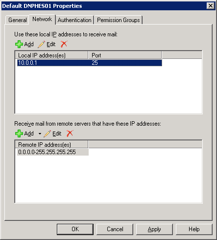
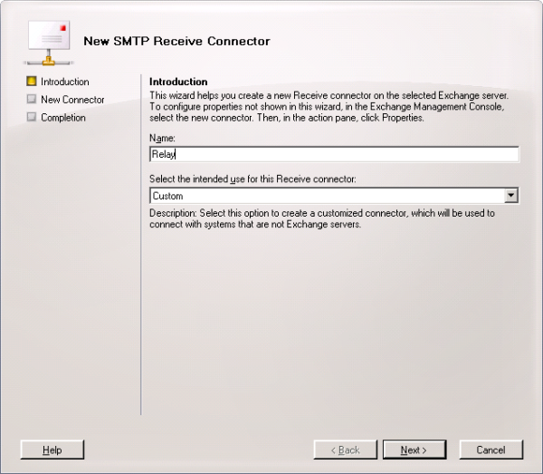
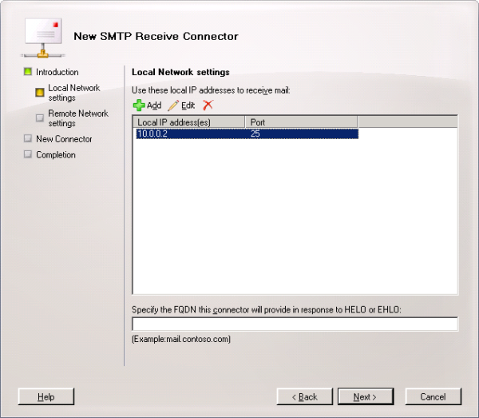
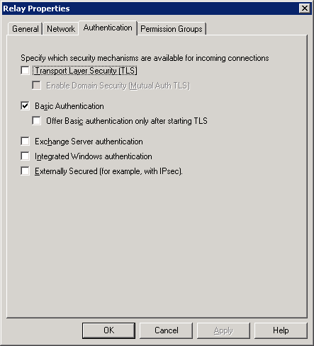
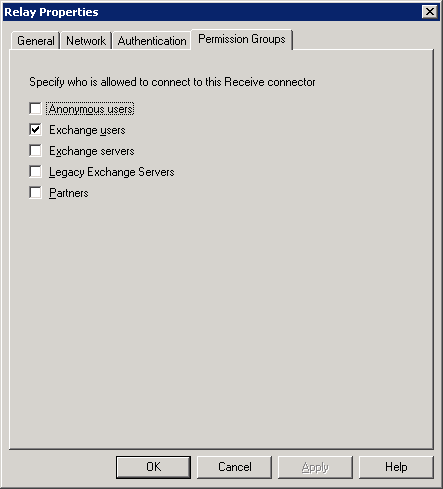
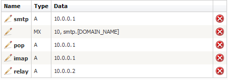
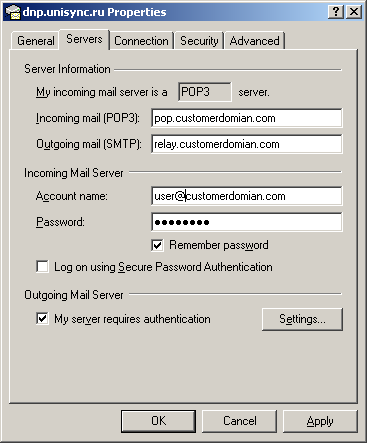

Enabling and tuning POP/SMTP and IMAP/SMTP client access
Translations:
WARNING!
Default Exchange 2007 settings are locked down to only accept SSL/TLS connections on secure ports (995 for POP3 or 993 for IMAP4). In case you prefer to accept those default secure settings, please look at this great article.
This article assumes that you need to deploy simplest POP/SMTP and IMAP/SMTP connection with traditional port numbers and clear text data transfer. It is obviously not secure. But in hosting business we can meet clients with old-school end users that dictate us to have those options.
Anyway the best practice for Exchange 2007 Hosting is to avoid POP3/SMTP and IMAP4/SMTP clients and provide users only with native client access - Outlook Anywhere, OWA and ActiveSync.
Deploying unsecured POP3/SMTP and IMAP4/SMTP configuration.
1. Enabling POP3
a. Go to Client Access Server Services. Start "Microsoft Exchange POP3" service and set its Startup Type to Automatic. For more detailed instructions how to perform this see here http://technet.microsoft.com/en-us/library/bb124934.aspx
b. Run the following command in the Exchange Management Shell:
Set-PopSettings -LoginType PlainTextLogin
c. Restart "Microsoft Exchange POP3" service
2. Enabling IMAP4
a. Go to Client Access Server Services. Start "Microsoft Exchange IMAP4" service and set its Startup Type to Automatic. For more detailed instructions how to perform this see here http://technet.microsoft.com/en-us/library/bb124489.aspx
b. Run the following command in the Exchange Management Shell:
Set-ImapSettings -LoginType PlainTextLogin
c. Restart "Microsoft Exchange IMAP4" service
3. Creating SMTP Relay connector
a. Get additional External (or Client Access Network, if you use NAT-based network) IP address for Hub Transport Server. If your Hub Transport Server coexists with Client Access Server on one machine and you already created OWA and/or Autodiscover redirect sites - you may have additional IP address already added to it.
b. Bind Default SERVERNAME receive connector to only one IP address. Open Exchange Management Console > Server Configuration > Hub Transport > and tick your Hub Transport server. Open Default SERVERNAME receive connector properties, go to Network tab and change receiving IP address from Any Available to first IP address of External (or Client Access Network, if you use NAT-based network) NIC of your Hub Transport Server. It should be the same IP address which is already used for A records of MX servers in clients DNS zones. 10.0.0.1 in our example.

c. Create new receive connector, name it Relay, choose Custom type in create connection wizard.

d. Bind this connector to second Hub Transport Server IP address (10.0.0.2 in our example), port 25.

e. Go to Authentication tab of new Relay connector and allow only Basic Authentication

f. Go to Permission Groups tab of new Relay connector and allow only Exchange Users.

4. Creating DNS template. If you use WSP provisioning with HES, create the following or similar records in HES DNS template. We assume that Client Access and Hub Transport Server are collocated on the same machine in this example. All records connected to OWA and Autodiscover was removed from this example to concentrate attention to POP/IMAP/SMTP things.

Such a records can not exist in real internet DNS. It is just example. Use real IP addresses of HUB/CAS Server Internet faced NIC if your HUB/CAS Server is directly connected to the Internet, or external IP addresses of NAT device which maps TCP 25, 110, 143 to appropriate private HUB/CAS Server IP addresses.
5. Instructing POP3/SMTP and IMAP4/SMTP users. Instruct your clients to tune client POP3/IMAP/SMTP application as follows:
a. Incoming Mail Server - pop.customerdomian.com for POP3 or imap.customerdomian.com for IMAP4
b. Outgoing Mail Server - relay.customerdomian.com
c. Outgoing Mail Server requires authentication, use the same authentication settings as Incoming Mail Server.
Here is example of Outlook Express POP3 client settings:
